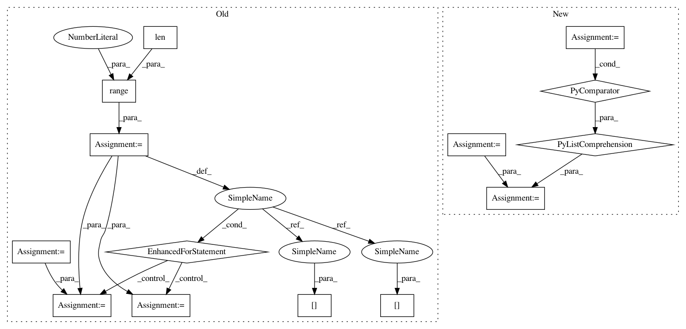

3dba9054b3c7bf4b9edabb430eb457a07e05b6ca,tensorly/mps_tensor.py,,mps_to_tensor,#Any#,8
Before Change
n_mode_dimensions = mps_get_n_mode_dimensions(factors)
D = len(n_mode_dimensions)
(r0, n1, r1) = factors[0].shape
output_tensor = factors[0]
output_tensor = tl.reshape(output_tensor, (n1, r1))
for k in range(1, D):
(r_prev, n_k, r_k) = factors[k].shape
G_k = tl.reshape(factors[k], (r_prev, n_k * r_k))
output_tensor = tl.dot(output_tensor, G_k)
output_tensor = tl.reshape(output_tensor, (-1, r_k))
output_tensor = tl.reshape(output_tensor, n_mode_dimensions)
return output_tensor
After Change
output_tensor: ndarray
tensor whose MPS/TT decomposition was given by "factors"
full_shape = [f.shape[1] for f in factors]
full_tensor = tl.reshape(factors[0], (full_shape[0], -1))
for factor in factors[1:]:
rank_prev, _, rank_next = factor.shape
factor = tl.reshape(factor, (rank_prev, -1))
full_tensor = tl.dot(full_tensor, factor)
full_tensor = tl.reshape(full_tensor, (-1, rank_next))
return tl.reshape(full_tensor, full_shape)
In pattern: SUPERPATTERN
Frequency: 3
Non-data size: 14
Instances
Project Name: tensorly/tensorly
Commit Name: 3dba9054b3c7bf4b9edabb430eb457a07e05b6ca
Time: 2018-07-05
Author: jean.kossaifi@gmail.com
File Name: tensorly/mps_tensor.py
Class Name:
Method Name: mps_to_tensor
Project Name: tensorly/tensorly
Commit Name: 3dba9054b3c7bf4b9edabb430eb457a07e05b6ca
Time: 2018-07-05
Author: jean.kossaifi@gmail.com
File Name: tensorly/mps_tensor.py
Class Name:
Method Name: mps_to_tensor
Project Name: cornellius-gp/gpytorch
Commit Name: d278768807dff0c1920795073a219577571959d7
Time: 2020-06-26
Author: wjm363@nyu.edu
File Name: gpytorch/lazy/kronecker_product_added_diag_lazy_tensor.py
Class Name: KroneckerProductAddedDiagLazyTensor
Method Name: inv_quad
Project Name: cornellius-gp/gpytorch
Commit Name: 348122d499073a7a58b21d6e5544bc4b47a9ee94
Time: 2020-06-26
Author: wjm363@nyu.edu
File Name: gpytorch/lazy/kronecker_product_added_diag_lazy_tensor.py
Class Name: KroneckerProductAddedDiagLazyTensor
Method Name: inv_quad